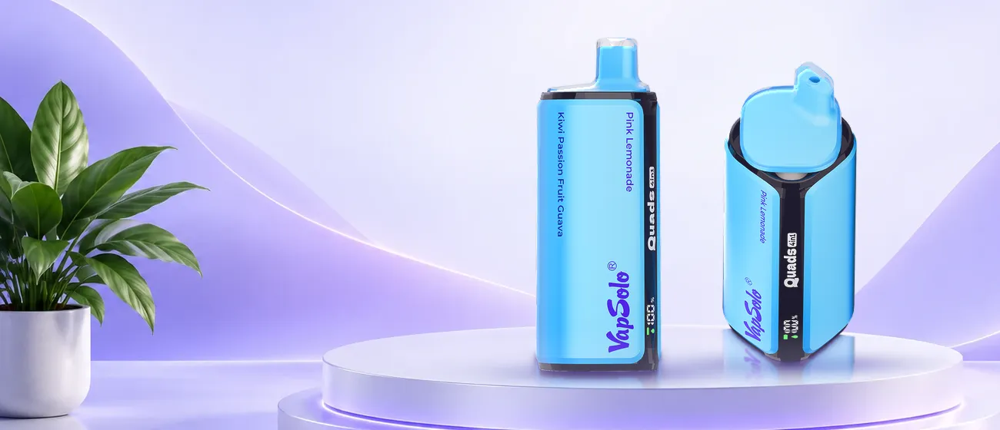

Guía
Cómo elegir un vaper desechable con muchas caladas
Una guía sin prisas para entender las caladas, la nicotina, la resistencia y la batería de los vapers desechables, con el VapSolo® Quads 80K como ejemplo.
Qué son las caladas
Una calada (también llamada «puff») es cada aspiración que das a un vaper. Los fabricantes de vapers desechables indican un número total de caladas para dar una idea de cuánto dura el dispositivo: 600, 3000, 30000 o, como en este caso, 80 000.
Es una estimación. Dos personas con el mismo vaper pueden agotarlo en tiempos muy distintos según cuántas caladas den al día y de qué duración. Por eso las caladas sirven sobre todo para comparar modelos entre sí, no para prometer un tiempo exacto.
Vaper desechable o vape recargable
Un vaper desechable se vende ya preparado con su e-líquido y su batería, y se usa hasta que se agota. Un vape recargable, en cambio, está pensado para volver a cargar la batería o rellenar el depósito.
El VapSolo® Quads 80K se presenta como vaper desechable, pero su batería de 650 mAh se recarga por USB Tipo-C. Si alguien lo busca como «vaper recargable» o «vape recargable», esa es la parte en la que acierta: se recarga la batería; la ficha no habla de rellenar el e-líquido.
80 000 caladas frente a un vaper de 30000
Entre los cigarrillos electrónicos desechables, la cifra de caladas es el primer filtro. Un vaper 30000 caladas ya se considera de larga duración; el Quads 80K declara 80 000, es decir, casi dos veces y media más.
Ahora bien, un número mayor no lo convierte automáticamente en mejor para todo el mundo: pesa más, ocupa más y su ficha incluye otros datos que también cuentan. Compara siempre fichas completas. Este sitio no describe vapers de 30000 caladas, solo el Quads 80K.
El formato 4 en 1
«4 en 1» significa que un mismo dispositivo reúne cuatro sabores. La boquilla es giratoria: al girarla cambias de sabor sin tener que llevar cuatro vapers distintos.
Las 13 combinaciones que mostramos reúnen 43 sabores diferentes. Puedes verlas todas en la página de sabores y combinaciones.
Nicotina: cómo leer el 2 %
El Quads 80K indica un 2 % de nicotina, que equivale a 20 mg/ml. Es una concentración habitual en vapers con nicotina, pero eso no la hace inocua: la nicotina es una sustancia altamente adictiva.
Si no consumes nicotina, este producto no es para ti. Y si eres menor de 18 años, tampoco: está prohibido su uso.
Resistencia, batería y USB Tipo-C
La resistencia (en este caso una Mesh Coil de 1,0 Ω) es la bobina que calienta el e-líquido. Mucha gente la busca como «resistencia vaper» al comparar modelos; lo importante es saber que es un dato de la ficha, no una promesa de sensaciones.
La batería de 650 mAh y el puerto USB Tipo-C completan el conjunto: con un cable de los que ya usas para otros aparatos puedes volver a cargarla.
Uso responsable y reciclaje
Los vapers son para adultos y deben mantenerse fuera del alcance de niños y mascotas. Contienen nicotina, sin fines terapéuticos.
Cuando el aparato se agote, no lo tires con la basura normal: contiene batería y componentes electrónicos. Entrégalo en un punto limpio o en un punto de recogida de aparatos electrónicos.
Siguiente paso
Pasa de la teoría a las combinaciones

Tu turno
Cuatro sabores te esperan en un solo vaper
Revisa la combinación que más te guste y continúa en la tienda online. Solo para mayores de 18 años.
Comprar ahora (se abre en una pestaña nueva)-
80 000 caladas máximas
-
4 en 1 sabores por vaper
-
USB Tipo-C carga de la batería
-
13 combinaciones con foto